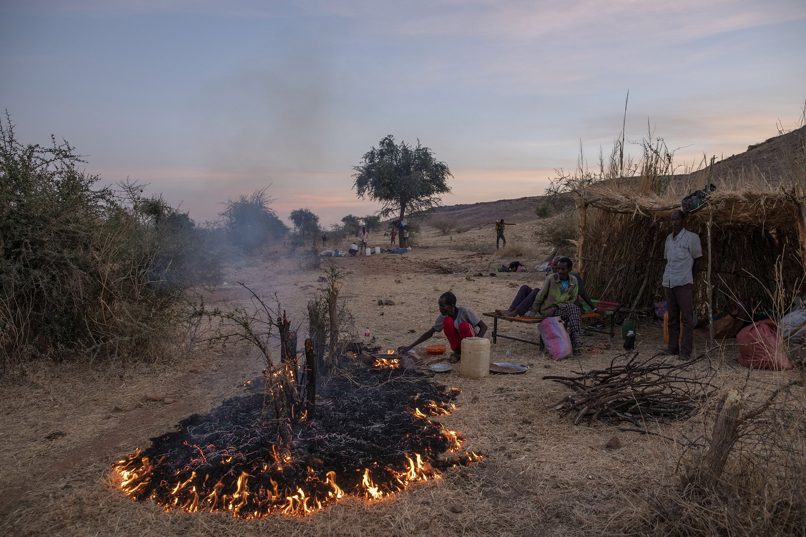

Thousands of Ethiopians Under Siege in Tigray Region Could Die From Starvation

A man lights a fire to make dinner for his family in the Umm Rakouba
refugee camp in Qadarif, eastern Sudan, Dec. 14, 2020. A growing
refugee crisis has seen more than 50,000 Ethiopians flee conflict in
the Tigray region into neighboring Sudan.
A man lights a fire to
make dinner for his family in the Umm Rakouba refugee camp in
Qadarif, eastern Sudan, Dec. 14, 2020. A growing refugee crisis has
seen more than 50,000 Ethiopians flee conflict in the Tigray region
into neighboring Sudan. Image: Nariman El-Mofty/AP
Your Text IS Here